LeoSync sichert Fotos, Videos und beliebige Ordner vom Handy auf deinen Windows-PC – direkt im Heimnetz, ohne Cloud und ohne Konto. Die Dateien gehen nur zwischen Handy und PC.
LeoSync sichert Fotos, Videos und beliebige Ordner vom Handy auf deinen Windows-PC – direkt im Heimnetz, ohne Cloud und ohne Konto. Die Dateien gehen nur zwischen Handy und PC.
1. Auf dem PC: Ordner freigeben
- Im Explorer mit der rechten Maustaste auf den Zielordner (z. B.
D:\Fotos) → Eigenschaften → Freigabe → Erweiterte Freigabe. - Diesen Ordner freigeben anhaken und einen Freigabenamen vergeben (z. B.
Fotos). - Unter Berechtigungen deinem Windows-Benutzer Ändern und Lesen erlauben.
- Die IP-Adresse des PCs findest du mit
ipconfigin der Eingabeaufforderung (z. B.192.168.1.20). Am besten richtest du im Router eine feste Adresse für den PC ein.
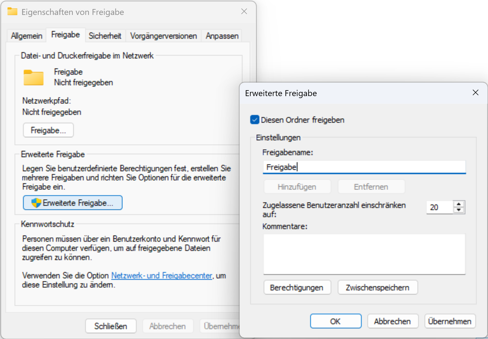

Eigenen lokalen Benutzer für LeoSync anlegen
Empfehlung: Verwende für LeoSync nie ein Administrator-Konto, sondern einen eigenen Benutzer mit eingeschränkten Rechten und einem starken Passwort (am PC wie am NAS). Falls die Zugangsdaten je in falsche Hände geraten, etwa durch einen gefälschten Server im Netz, ist der Schaden so auf den einen freigegebenen Ordner begrenzt.
Statt deines normalen Windows-Kontos kannst du einen eigenen lokalen Benutzer nur für LeoSync verwenden. So steht dein persönliches Passwort (oder das deines Microsoft-Kontos) nicht in der App, und der Benutzer erhält nur Rechte auf den einen freigegebenen Ordner.
- Benutzer anlegen: Einstellungen → Konten → Andere Benutzer (Windows 10: Familie & andere Benutzer) → Konto hinzufügen → Ich kenne die Anmeldeinformationen dieser Person nicht → Benutzer ohne Microsoft-Konto hinzufügen. Vergib einen Benutzernamen (z. B.
leosync) und ein Passwort. Das Passwort darf nicht leer sein, denn Windows verweigert den Netzwerkzugriff mit leerem Passwort. - Alternativ in der Eingabeaufforderung, als Administrator geöffnet:
net user leosync * /add. Windows fragt dann nach dem Passwort. - Freigabe-Berechtigung: Im Explorer rechte Maustaste auf den Zielordner → Eigenschaften → Freigabe → Erweiterte Freigabe → Berechtigungen → Hinzufügen. Benutzernamen eingeben, Namen überprüfen, mit OK bestätigen. Dann Ändern und Lesen erlauben.
- Ordner-Berechtigung: Im selben Eigenschaften-Fenster auf Sicherheit → Bearbeiten → Hinzufügen, den Benutzer eintragen und Ändern erlauben. Windows prüft Freigabe- und Ordnerrechte, es gilt jeweils die strengere Einstellung.
- In LeoSync eintragen: Gib im Profil den neuen Benutzernamen und sein Passwort ein. Das Feld für die Domäne lässt du bei einem lokalen Konto meist leer. Klappt die Anmeldung nicht, versuche
PC-NAME\leosyncals Benutzer. Den PC-Namen findest du unter Einstellungen → System → Info. Mit Verbindung testen prüfst du das Ergebnis.
So sieht Schritt 1 in Windows aus:


2. In LeoSync: Profil anlegen
Tippe auf Profil hinzufügen und wähle den Typ:
- Fotos & Videos sichern – von der Kamera auf den PC, automatisch sortiert nach Jahr, Monat und Reiseland (z. B.
2026\06 - Ägypten). Auf Wunsch werden die Fotos danach vom Handy entfernt. - Ordner synchronisieren – ein beliebiger Ordner 1:1, in eine oder beide Richtungen.
Der Assistent führt Schritt für Schritt durch Name, Quelle, Ziel und Optionen. Beim Ziel genügt der PC (\\192.168.1.20) mit Benutzer und Passwort; Ordner auf dem PC wählen… zeigt dann die Freigaben und Ordner zur Auswahl. Mit Verbindung testen siehst du sofort, ob alles stimmt.
Bei Fotos-Profilen wählst du die Ordnerstruktur: Jahr\Monat - Land (Standard), Jahr\Land\Monat oder Jahr\Monat\Land. Sie lässt sich bis zur ersten Synchronisierung des Profils ändern. Mehrere Fotos-Profile mit demselben Ziel müssen dieselbe Struktur verwenden.
Länderordner (nur Fotos-Profile): Dafür liest LeoSync den Aufnahmeort (GPS-Daten im Foto) aus deinen Fotos, um den Ordner zu bestimmen. Erst wenn du Länderordner wählst, fragt LeoSync mit einer Erklärung nach der Berechtigung Standort in Fotos. Der Ort wird nur auf dem Handy ausgewertet und weder gespeichert noch gesendet; die Fotos selbst werden unverändert übertragen. Lehnst du ab, bleiben die Länderordner aus; fehlt die Berechtigung später, steht im Profil «Aufnahmeort: Berechtigung fehlt» mit Erteilen.
Unter PC-Erkennung im Profil siehst du, ob LeoSync deinen PC erkennt: PC erkannt, Noch nicht erkannt oder Anderer PC. LeoSync erkennt deinen PC an seiner Kennung, damit es nur mit deinem PC synchronisiert und nicht mit einem anderen Gerät. Die Kennung wird geprüft, bevor Benutzername und Passwort gesendet werden. Ist der PC noch nicht erkannt, tippe zu Hause auf Verbindung testen. Bei Anderer PC (z. B. nach einer Neuinstallation von Windows, dann ändert sich die Kennung) wird nichts synchronisiert; prüfe, ob wirklich dein PC antwortet, und bestätige dann mit Verbindung testen. LeoSync braucht dafür keinen WLAN-Namen und keine Standortberechtigung.
Unter Bekannte Netze: N steht, in wie vielen Netzen LeoSync deinen PC schon sicher erkannt hat. In fremden WLANs sucht es nur kurz nach dem PC, um Akku zu sparen; geschützt bist du durch die PC-Kennung, nicht durch die bekannten Netze. Namen der Netze zeigt LeoSync nicht an, nur die Anzahl. Nach einem Umzug oder einem Router-Wechsel kannst du mit Vergessen die bekannten Netze zurücksetzen: LeoSync lernt sie beim nächsten Verbinden neu, es geht keine Datei verloren. Profile aus einer alten Sicherung, die früher am WLAN-Namen hingen, stellt LeoSync beim Import auf die PC-Kennung um (ein Verlaufseintrag meldet es); kennt ein Profil den PC noch nicht, tippe einmal auf Verbindung testen.
Zahlenfelder im Profil akzeptieren nur Werte im erlaubten Bereich: Papierkorb leeren nach … Tagen 0 bis 3650 (0 = nie), Schutzbremse 1 bis 100 %. Ein ungültiger Wert wird unter dem Feld gemeldet; Speichern ist dann gesperrt. Im Assistenten lässt Weiter einen Schritt mit leerem oder ungültigem Zahlenfeld nicht verlassen; Speichern springt dort zum ersten fehlerhaften Schritt. Bei Filtern wird ein Muster mit nicht geschlossener Klammer abgelehnt. Die Filterkarte zeigt eine Kurzfassung, auf der Profilkarte steht Filter aktiv.
Beim Speichern warnt LeoSync, wenn sich Profile überschneiden, auch zwischen einem Fotos-Profil und einem Ordner-Profil: wenn der Zielordner des Fotos-Profils gleich dem PC-Ordner des Ordner-Profils ist, darin liegt oder ihn enthält, und wenn ein Fotos-Quellordner und der Handy-Ordner ineinander liegen, während das Ordner-Profil Dateien aufs Handy lädt. Fotos-Profile erfassen denselben Ordnerpfad auf allen Datenträgern (interner Speicher und SD-Karte); deshalb vergleicht die Warnung Handy-Ordner unabhängig vom Datenträger. Ein Ordner-Profil direkt auf der obersten Ebene des Speichers warnt ebenfalls, weil es alle Fotoordner enthält. Mit Trotzdem speichern machst du weiter.
Verschlüsselung einschalten
Auf der Karte Verschlüsselung im Profil (standardmässig eingeklappt) legst du pro Profil fest, ob die Übertragung zum PC verschlüsselt wird, damit niemand im Netz mitlesen kann. Auf der Profilkarte erscheint oben rechts ein Schild-mit-Schloss-Symbol, wenn die letzte Anmeldung des Profils tatsächlich verschlüsselt war (nicht schon bei der blossen Einstellung «Wenn möglich»). Nach einer Änderung der Einstellung, der Freigabe oder des Unterordners zeigt die Karte bis zur nächsten Verbindung kein Symbol:
- Aus: keine Verschlüsselung. Nur in einem Netz empfohlen, dem du vertraust.
- Wenn möglich (empfohlen): verschlüsselt, sobald der PC es kann. Sonst läuft die Verbindung unverschlüsselt weiter. Das ist der Standard, auch für bestehende Profile.
- Erforderlich: verbindet nur verschlüsselt. Kann der PC das nicht, kommt keine Verbindung zustande und es wird kein Passwort gesendet. Am sichersten.
Verbindung testen zeigt, ob die Verbindung verschlüsselt ist, und welche SMB-Version verwendet wird. Verschlüsselung gibt es nur ab SMB 3; Windows 10 und 11 unterstützen sie, bei einem NAS (Samba) hängt es von dessen Einstellungen ab. Ist Erforderlich gewählt und der PC kann nicht verschlüsseln, erscheint eine Meldung dazu. Bei automatischen Synchronisierungen meldet LeoSync das pro Profil nur einmal, bis wieder eine Synchronisierung gelingt; bei einem Start von Hand erscheint die Meldung jedes Mal.
Schritte auf dem PC oder NAS (nach der Herstellerdokumentation; nicht auf jedem Gerät von uns geprüft). Den Erfolg zeigt immer Verbindung testen in LeoSync.
- Windows 10 und 11: PowerShell als Administrator öffnen. Eine Freigabe verschlüsseln:
Set-SmbShare -Name <Freigabename> -EncryptData $true. Alle Freigaben des PCs:Set-SmbServerConfiguration -EncryptData $true. Stand prüfen:Get-SmbShare -Name <Freigabename> | Select-Object Name, EncryptData(True= eingeschaltet). Danach akzeptiert die Freigabe nur noch Geräte mit SMB 3 und Verschlüsselung; andere erhalten «Zugriff verweigert». Die EinstellungRejectUnencryptedAccessnicht auf$falsesetzen, Microsoft rät davon ab. - Samba (z. B. Linux, viele NAS): In der
smb.confden Parameterserver smb encrypt(global oder je Freigabe) aufdesiredoderrequiredsetzen. Das gibt es erst ab SMB 3, undserver max protocolmuss SMB3 oder neuer erlauben. - Synology und QNAP: Die Menüs unterscheiden sich je nach Firmware; bitte die Hilfe des Herstellers verwenden. Bei Synology (DSM 7) heisst die Option «Transport encryption mode on SMB3» (Systemsteuerung › Dateidienste › SMB › Erweiterte Einstellungen). Bei QNAP muss die höchste SMB-Version auf SMB 3.0 stehen.
- Der Server kann nur SMB 2: Dann ist keine Verschlüsselung möglich, und mit Erforderlich verbindet LeoSync nicht. Schalte auf dem Server SMB 3 ein (oder aktualisiere ihn). Geht das nicht, wähle in LeoSync Wenn möglich oder Aus. Die Übertragung ist dann unverschlüsselt und sollte nur in einem vertrauenswürdigen Heimnetz erfolgen.
Neue Profile starten erst, wenn du einmal Synchronisieren tippst. Du kannst vorher simulieren, was passieren würde.
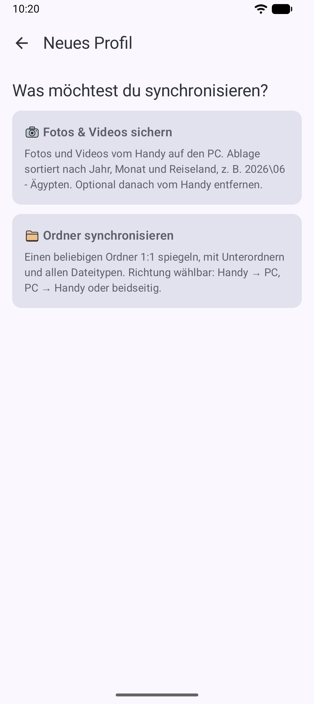
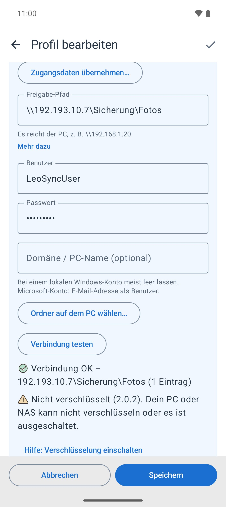
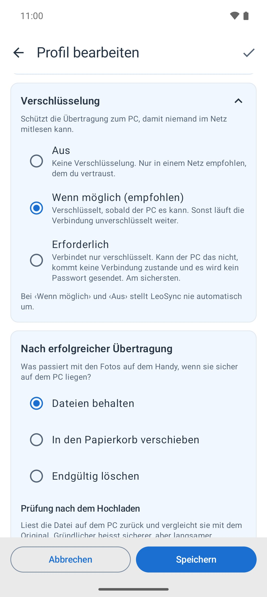
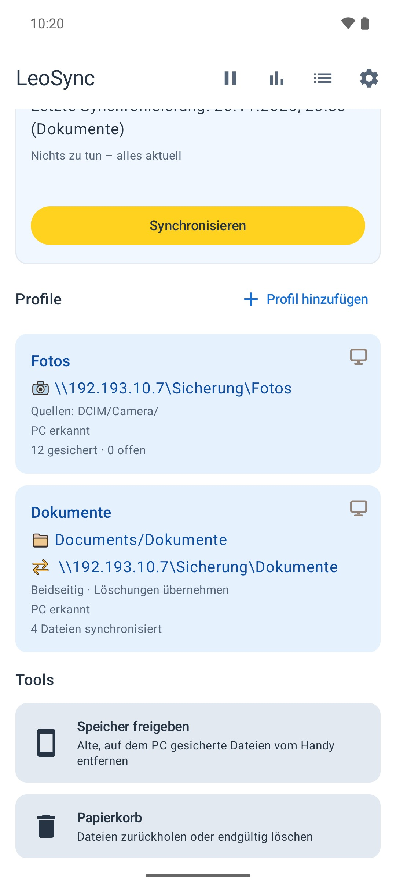
3. Im Alltag
- Automatisch: Sobald das Handy mit einem WLAN verbunden ist, in dem LeoSync deinen PC erkennt, synchronisiert LeoSync im Hintergrund. Bekannte Netze (siehe Abschnitt 2) prüft es wie bisher; in einem unbekannten WLAN sucht es nur kurz nach dem PC, um Akku zu sparen.
- Updates: LeoSync wird über Google Play aktualisiert, es gibt in der App keine Update-Seite. In Über LeoSync steht der Hinweis «Updates kommen über Google Play».
- Nach dem Import: Importierst du eine Sicherung, warten die Profile bewusst auf ihren ersten Start. Oben auf der Startseite zeigt die Karte Nach dem Import je Profil den nächsten Schritt mit einer Schaltfläche: Ordner wählen (wenn der Handy-Ordner neu verknüpft werden muss), Verbindung testen (wenn der PC noch nicht erkannt ist) und Jetzt starten (erster Abgleich). Die Karte lässt sich einklappen, aber nicht wegwischen; sie verschwindet, sobald jedes Profil einmal gelaufen ist.
- Prüfintervall der Ordner-Profile: Unter Einstellungen → Übertragung legst du mit Ordner-Profile: Prüfintervall (Minuten) (15 bis 1440, Standard 60) fest, wie oft LeoSync bei Ordner-Profilen auf Änderungen prüft. Die Einstellung gilt für alle Ordner-Profile (früher je Profil, wirksam war das kürzeste); bei einem Update übernimmt die App das kürzeste bisherige Intervall. Geprüft wird nur, solange ein aktives Ordner-Profil existiert.
- Neue Fotos (Mindestalter): Mindestalter für Fotos (Minuten) unter Einstellungen → Übertragung gibt an, wie alt ein Foto mindestens sein muss. Nach einer Fotoserie läuft nur noch ein Nachhol-Lauf, sobald das neuste Foto das Mindestalter erreicht hat (statt einer je Foto); sind keine Fotos übertragungsbereit, startet kein Lauf und es entsteht kein Verlaufseintrag.
- Mobile Daten/VPN: Unter Einstellungen → Übertragung kannst du die Automatik auch ausserhalb des WLAN zulassen (standardmässig aus). Das kann Datenverbrauch und bei manchen Mobilfunkabos Kosten verursachen, etwa im Ausland. Ist der PC nicht erreichbar, prüft LeoSync ausserhalb des WLAN nur alle 2 Stunden erneut. Im Roaming (ausserhalb deines Heimnetzbetreibers, z. B. im Ausland) startet über mobile Daten oder VPN kein automatischer Lauf; WLAN und der Start von Hand funktionieren wie sonst.
- Nur beim Laden: Auf Wunsch synchronisiert LeoSync nur, solange das Handy am Ladegerät hängt (Einstellungen).
- Von Hand: Synchronisieren tippen oder auf der Startseite ganz oben nach unten ziehen. Läuft gerade eine Synchronisierung, wird dein Start nicht verworfen, sondern danach genau einmal nachgeholt: LeoSync meldet «Wird nach der laufenden Synchronisierung gestartet.», und die Statuskarte zeigt «Danach: alle Profile» (bei einem automatischen Start «Danach folgt eine weitere Synchronisierung.»). Pausieren oder Abbrechen verwirft den vorgemerkten Start.
- Pausieren: Das Pause-Symbol oben rechts – für eine Zeit oder «für immer» (nur noch von Hand). Das Fortsetzen-Symbol (Dreieck) an derselben Stelle setzt fort. Die Statuskarte zeigt dann die Überschrift «Pausiert» (mit Pause-Symbol) und darunter «Pausiert bis 06:23 Uhr» bzw. «Pausiert – nur manuell».
- Symbole auf der Profilkarte: Oben rechts zeigt die Karte nur die zutreffenden Symbole, von links nach rechts ohne Lücke: PC (die Kennung des PCs ist bekannt, «PC erkannt») und das Schild (die letzte Anmeldung war verschlüsselt; rot mit Warndreieck, wenn die Verschlüsselung abgelehnt wurde). Der Zustand steht zusätzlich in den Textzeilen unter dem Namen. Ein WLAN-Symbol gibt es nicht mehr, weil LeoSync den WLAN-Namen nicht mehr liest.
- Der Hund zeigt den Zustand: schläft = alles gesichert, läuft = Synchronisierung läuft, steht = wartet auf deine Entscheidung, sitzt = wartet (z. B. auf das WLAN, die erste Synchronisierung oder auf Dateien, die später folgen). Die Statuskarte meldet «alles aktuell» nie bei einem offenen Konflikt, fehlender Verbindung, ausstehenden Dateien oder einem Fehler im letzten Lauf.
- «Noch nicht alles gesichert» (mit Wiederholen-Symbol): Wurde eine Datei während der Synchronisierung auf dem Handy oder PC geändert, lässt LeoSync sie in diesem Lauf aus und holt sie später nach. Der Lauf zählt trotzdem als erfolgreich; im Verlauf steht «· N folgen später», und die Startseite meldet «N Dateien wurden während des Laufs geändert und folgen beim nächsten Sync.» Du musst nichts tun: LeoSync startet nach 5 Minuten automatisch einen Folgelauf, höchstens einen pro Stunde (Pause und «nur manuell» werden beachtet). Danach folgen die üblichen Auslöser wie Ordnerprüfung und WLAN. Sobald ein Lauf ohne ausstehende Dateien endet, steht wieder «Alles gesichert und aktuell».
- «Keine Verbindung» und «Start nicht möglich»: Konnte ein Start nicht ausgeführt werden, weil der PC oder das WLAN nicht verfügbar ist, zeigt die Statuskarte «Keine Verbindung» (der sitzende Hund auf blauem Kreis, solange Dateien warten) statt «Bereit» oder eines Fehlers; ein Start von Hand meldet «Start nicht möglich». «Alles gesichert» erscheint erst, wenn jedes aktive Profil einmal von Hand erfolgreich gestartet wurde. «Wartet auf das Heim-WLAN» erscheint nur nach einem Unterbruch mitten im Lauf. Bei «Keine Verbindung» nennt die Karte auch die Zahl der wartenden Dateien («1 Datei wartet auf die Synchronisierung.» / «N Dateien warten …»). Die Profilkarte eines Ordner-Profils zeigt zusätzlich «· N offen»: neue oder seit dem letzten Abgleich geänderte Dateien im Handy-Ordner. Die Zahl wird nur auf dem Handy gezählt (ohne Netzwerk); bei «PC → Handy» gibt es keinen Zähler, Fotos-Profile zeigen ihn nicht.
- Sicherung: Die Meldungen beim Export und Import zählen auch den Abgleichstand der Ordner-Profile mit (vorher nur Fotodateien; der Ordner-Stand war schon vorher enthalten).
- Datum und Uhrzeit: Alle Anzeigen folgen den Systemeinstellungen des Handys (Region, 12 h/24 h), auch wenn die App-Sprache davon abweicht (z. B. US-Format bei deutscher App). Feste Formate bleiben bei Dateinamen, Sicherung/Export, Diagnose und Papierkorb-Tagesordnern.
- «Letzte Synchronisierung»: Die Startseite zeigt den letzten Lauf ohne Fehler (mit Profil), nicht den letzten Versuch; auch ein fehlerfreier Lauf, bei dem nichts zu übertragen war, zählt. Läufe mit Fehlern, Teilerfolg oder Abbruch ändern die Zeit nicht. Ohne erfolgreichen Lauf steht «Noch keine erfolgreiche Synchronisierung.».
- «Meldungen» auf der Startseite: Probleme erscheinen gesammelt in einer Kachel zum Blättern (Pfeile und Zähler), nach Ursache gruppiert: Betrifft dieselbe Ursache mehrere Profile (derselbe PC, dieselbe Freigabe, dasselbe Konto), steht sie einmal da, mit den betroffenen Profilen. Jedes Profil behält seinen eigenen Zustand; kein Fehler verschwindet durch das Gruppieren. Die Farbe richtet sich nach dem Schwersten (rötlich: Schutzbremse, Sicherheit, du musst handeln; gelb: Entscheidungen und vorübergehende Meldungen). Tipps (z. B. Akku) und die Checkliste nach dem Import stehen ebenfalls dort, ohne Farbe. «Erneut versuchen» wiederholt nur die Profile der Gruppe; ein neues Passwort gibst du einmal je PC und Konto ein. «PC nicht erreichbar» erscheint erst, wenn 24 Stunden lang kein Lauf gelang. Die Überschrift der Statuskarte lautet Fehler (Schutzbremse, Sicherheit, du musst handeln, fehlende Pflichtberechtigung), Wartet auf dich (Konflikt, Monatsordner, Löschbestätigung) oder Meldungen (vorübergehend).
- Profilnamen: Jeder Profilname darf nur einmal vorkommen (Gross-/Kleinschreibung und Leerzeichen am Rand zählen nicht). Geprüft wird bei Weiter im Namensschritt, beim Speichern und beim Bearbeiten. Bestehende Doppelnamen werden nicht umbenannt, sondern beim Bearbeiten gemeldet; Speichern anderer Änderungen bleibt möglich. Der Import mit Hinzufügen prüft die Namen bewusst nicht.
- «Zugriff verweigert» beim Verbindungstest: Steht die Verschlüsselung auf Aus, nennt die Meldung sie als mögliche Ursache (der Server verlangt sie vielleicht).
- Import «Ersetzen»: Die Warnung steht oben fest in Fehlerfarbe, die Angaben zur Sicherung scrollen darunter.
- «Handy-Ordner: Zugriff verloren»: Hat LeoSync keinen Zugriff mehr auf den Handy-Ordner eines Profils (z. B. nach einem Import der Einstellungen), steht auf der Profilkarte (mit Warnsymbol) «Handy-Ordner: Zugriff verloren – tippen und neu wählen». Tippen öffnet das Profil, dort wählst du den Ordner neu.
- Speicher freigeben: Auf der Startseite unter den Werkzeugen entfernt LeoSync alte Dateien vom Handy, die nachweislich auf dem PC liegen. Jede Datei wird vorher auf dem PC geprüft; du wählst nach Alter, Ordner, Dateityp und Grösse und siehst eine Vorschau. Fotos und Videos kommen in den Papierkorb der Galerie (unter Android 10 gibt es ihn nicht; ein Hinweis weist darauf hin). Das Ergebnis nennt, wie viele Dateien gelöscht und übersprungen wurden und wie viel Speicher frei wurde. Tipp: Gib Speicherplatz auf dem Handy erst nach einer Synchronisierung frei, am sichersten mit Speicher freigeben in LeoSync. Google Fotos kann Originale löschen, bevor sie gesichert sind (Speicherplatz freigeben in Google Fotos); LeoSync zeigt dazu einmal nach dem Fotos-Profil-Assistenten einen Hinweis.
- Sicherung der Einstellungen: Profile, Einstellungen und Abgleichstand lassen sich als Datei exportieren und wieder importieren. Passwörter sind dabei nur mit einem Export-Passwort verschlüsselt enthalten. Die App-Sprache gehört nicht zur Sicherung. Beim Import ist Ersetzen in Warnfarbe hervorgehoben, weil es die vorhandenen Profile ersetzt.
- Verlauf: Mit Verlauf löschen entfernst du die Einträge. LeoSync fragt vorher nach und bietet danach Rückgängig an, solange die Meldung unten zu sehen ist. Bei Fehlereinträgen steht eine Handlungsempfehlung. Der Verlauf-Filter setzt sich beim Verlassen der Seite zurück.
- Sprache: Die App-Sprache folgt der Handy-Sprache (Deutsch, sonst Englisch). Unter Einstellungen → Sprache lässt sie sich fest wählen.
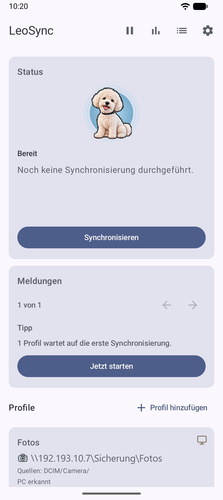
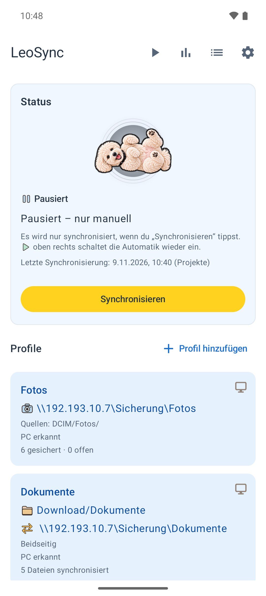
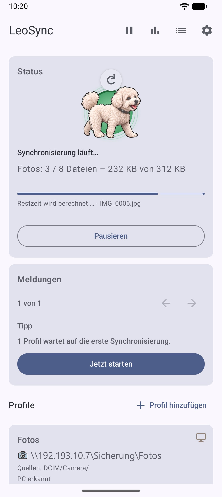
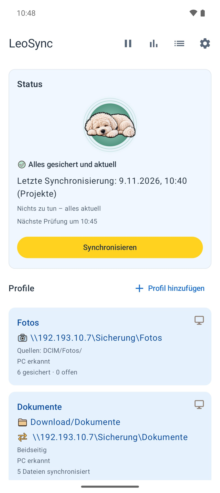
4. Sicherheit deiner Dateien
- Prüfung nach dem Hochladen: LeoSync liest die Datei auf dem PC zurück und vergleicht sie mit dem Original. Die Stufen reichen von Aus bis Komplett, Standard ist Mittel. Wer Fotos vom Handy entfernen lässt, prüft immer.
- Papierkorb: Bei Ordner-Profilen landen gelöschte und überschriebene Dateien im Ordner
@LeoSync-Bin(auf Handy und PC/NAS; ein normaler, sichtbarer Ordner, bei QNAP/Samba war der frühere Name.LeoSync-Binversteckt). Ältere Papierkorb-Ordner (.LeoSync-Binu. a.) benennt LeoSync beim nächsten Lauf automatisch um bzw. verschiebt den Inhalt, ohne etwas zu kopieren oder zu überschreiben; im Verlauf steht eine Zeile dazu. Lehnt ein PC den Namen@LeoSync-Binab, nutzt LeoSync dort.LeoSync-Binund warnt im Verlauf. Die Zeile je Version im Papierkorb zeigt «geändert …» (Änderungszeit der Datei), sonst «gelöscht am …». Die Einträge lassen sich über Tools → Papierkorb zurückholen: Profil wählen, Einträge markieren und Wiederherstellen tippen (oder Endgültig löschen). Bei jeder Datei auf dem Handy steht Öffnen: Es öffnet die Datei nur zum Ansehen mit der Standard-App bzw. der Android-App-Auswahl, im Papierkorb ändert sich nichts; ohne passende App oder bei fehlender Datei erscheint eine Meldung. Bei Dateien nur auf dem PC fehlt Öffnen. Mit Anzeigen (Handy und PC / Nur Handy / Nur PC) und Tag schränkst du die Liste ein; ändert sich ein Filter und die Auswahl enthielte ausgeblendete Einträge, wird sie aufgehoben. Die Auswahlleiste und der Löschdialog nennen, welche Seiten betroffen sind. Wiederherstellen schreibt immer auf Handy und PC zurück, auch bei einem Filter; der Dialog nennt, wie viele Dateien laut Synchronisierungsstand ersetzt werden (die aktuelle Version kommt vorher in den Papierkorb) und wie viele neu angelegt werden. Auf dem Handy legt LeoSync im Papierkorb eine leere Datei.nomediaan, damit die Galerie ihn nicht anzeigt (nicht bei Download-Ordnern mit Nummern-Kennung); Dateien im Papierkorb werden vom Fotos-Profil nicht gesichert und bei Speicher freigeben nicht angeboten. Nach 30 Tagen (einstellbar) wird er geleert. Fotos-Profile haben keinen eigenen Papierkorb: Entfernte Fotos liegen im Papierkorb der Galerie. Im Papierkorb erscheint ein Hinweis, solange der Umzug von.LeoSync-Binnach@LeoSync-Binauf offene Wiederherstellungen wartet (es geht nichts verloren; bei mehrfach fehlgeschlagenen Wiederherstellungen versuchst du sie erneut oder verwirfst sie) oder wenn dein PC oder NAS den Namen@LeoSync-Binablehnt und LeoSync dort bei.LeoSync-Binbleibt (normal, deine Dateien sind geschützt). - Schutzbremse: Würden auf einmal viele Dateien gelöscht (Standard: mehr als 20 %) oder fehlt ein ganzer Ordner, hält LeoSync an und fragt dich zuerst. Du entscheidest dann zwischen Nicht löschen und Trotzdem in den Papierkorb; bis dahin ruht das Profil.
- Änderung bestätigen: Änderst du bei einem bestehenden Ordner-Profil die Richtung oder schaltest Löschungen übernehmen ein, zeigt LeoSync vor dem Speichern, was sich ändert, und du bestätigst mit Speichern oder brichst mit Abbrechen ab. Bei einer Richtung nur in eine Richtung werden abweichende Dateien auf der Zielseite ersetzt; die ersetzte Version kann in den Papierkorb kommen.
- Entfernen nach der Sicherung: Bevor LeoSync ein gesichertes Foto vom Handy entfernt, prüft es die Kopie auf dem PC erneut. Ist der PC nicht erreichbar, wird nichts gelöscht («PC nicht erreichbar – nichts gelöscht»). Fehlt die Kopie oder weicht sie ab, bleibt das Original auf dem Handy und wird beim nächsten Lauf erneut gesichert. Speicher freigeben prüft zusätzlich Grösse, Teil-Prüfsumme und Änderungsdatum.
- Konflikte: Wurde eine Datei auf Handy und PC geändert und ist keine automatische Regel eingestellt, entscheidest du, welche Version gilt. Die andere kommt in den Papierkorb. Auf der Konfliktkarte steht bei der neueren Seite «(neuer)», bei gleichem Zeitstempel (auf die Sekunde) «(gleich alt)». Mit Beide behalten wird die Handy-Datei zur Konfliktkopie
…_conflict-phone; gibt es diesen Namen schon, heisst sie…_conflict-phone-2,-3usw. Die Konfliktkopie überschreibt nie eine vorhandene PC-Datei. Rückgängig nach einer Entscheidung wirkt zuverlässig: Hast du rückgängig gemacht, führt LeoSync die Entscheidung nicht mehr aus, auch wenn gerade ein Sync läuft. Bei Bildern und Videos zeigt die Konfliktkarte, wo es sich ermitteln lässt, zusätzlich die Auflösung beider Seiten (bei Videos mit Dauer); die höhere ist mit «(grösser)» beschriftet, aber nie vorausgewählt. Messenger verkleinern Fotos oft, die Datei mit der höheren Auflösung hat meist die bessere Qualität. - Verschlüsselung: Mit der Stufe Erforderlich sendet LeoSync Benutzername und Passwort nur, wenn die Verbindung verschlüsselt werden kann (siehe Verschlüsselung einschalten).
- PC-Kennung: LeoSync sendet Benutzername und Passwort nur an einen erkannten PC. Bei einem unbekannten PC meldet sich die App nicht an und überspringt das Profil. Die Kennung ist nicht geheim: Sie schützt vor einem fremden Server in einem fremden Netz, nicht vor einem gezielten Angriff.
- Verschlüsselung oder Signierung nicht mehr verfügbar: War ein Profil früher verschlüsselt (oder signiert) verbunden und bietet der PC oder das NAS das jetzt nicht mehr an, hält LeoSync das Profil an und überträgt nichts. Möglich ist, dass du die Einstellung am NAS oder PC geändert hast, oder dass jemand die Verbindung im Netz stört. Auf der Startseite und im Profil erscheint eine Karte «Verschlüsselung nicht mehr verfügbar» (bzw. «Signierung nicht mehr verfügbar»), die Profilkarte zeigt das Schild-Symbol rot mit Warndreieck, im Verlauf steht «Angehalten: Verschlüsselung abgelehnt (früher verschlüsselt)», und LeoSync benachrichtigt dich einmal. Mit Verbindung testen prüfst du erneut; Unverschlüsselt erlauben (bzw. Ohne Signierung erlauben) setzt den Merker zurück und überträgt danach ohne diesen Schutz. Wähle das nur, wenn du die Einstellung selbst geändert hast.
- Verschlüsselung automatisch auf «Erforderlich»: Verschlüsselt der PC tatsächlich, während ein Profil auf Wenn möglich steht, stellt LeoSync es selbst auf Erforderlich um und meldet das im Verlauf und mit einer Zeile oben im Profil (mit OK). Das schützt vor einer unbemerkten Herabstufung. Die Stufe bleibt frei wählbar: Wenn du sie wieder auf Wenn möglich oder Aus stellst, fragt LeoSync nach («Weniger Schutz?»), und für dieses Profil stellt es danach nie mehr automatisch um.
- Anderes Laufwerk erkannt: LeoSync merkt sich die Kennung des Laufwerks hinter der PC-Freigabe. Weicht sie ab, hält der Ordner-Sync an, bevor eine Datei angefasst wird. Die Karte nennt die möglichen Ursachen (Festplatte oder NAS getauscht, Laufwerk neu formatiert, anderes Gerät unter derselben Adresse). Nicht synchronisieren lässt das Profil angehalten; Ist das richtige Laufwerk – weiter übernimmt die neue Kennung, danach prüft eine Stichprobe den PC-Ordner. Das schützt vor Datenverlust, ist aber kein Schutz vor einem gezielten Angriff. Als Kennzeichen nutzt LeoSync die Erstellungszeit der Freigabe; wird sie auf demselben Laufwerk neu angelegt oder liefert ein NAS sie nicht stabil, kann die Karte öfter erscheinen. Es geht dabei nie eine Datei verloren.
- Umbenennen und Verschieben (Ordner-Profile): Mit Löschungen übernehmen erkennt LeoSync, wenn du eine Datei oder einen ganzen Ordner umbenennst oder verschiebst, und führt das auf der anderen Seite ebenfalls aus (statt Löschen und neu Hochladen); der Inhalt wird vorher geprüft. Ohne «Löschungen übernehmen» bleiben beim Umbenennen beide Namen auf beiden Seiten, es entstehen also bewusst Dubletten. Im Verlauf steht «umbenannt/verschoben: alt → neu». Kann der Speicherort deines Handys nichts verschieben, ist die Erkennung für dieses Profil aus (es wird nie kopiert).
- Geändert und gelöscht: Bei Richtung Beidseitig mit Löschungen übernehmen gilt: Wurde eine Datei auf einer Seite gelöscht und auf der anderen geändert, wird sie wiederhergestellt statt in den Papierkorb zu gehen; der Verlauf nennt es.
- Namen, die Windows nicht erlaubt: Dateien mit unzulässigen Zeichen, Punkt oder Leerzeichen am Ende oder reservierten Namen (z. B.
CON) lädt LeoSync nicht auf den PC, sondern überspringt sie mit einem Hinweis (kein Fehler). Namen, die sich nur durch Gross-/Kleinschreibung unterscheiden, meldet LeoSync als Kollision. - Speicherort ohne Änderungszeit: Liefert ein Speicherort für fast alle Dateien keine Änderungszeit, meldet LeoSync das einmal je Profil und Ordner.
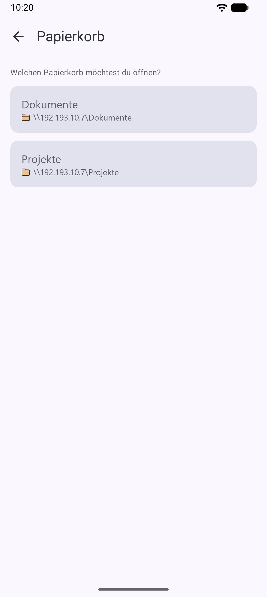
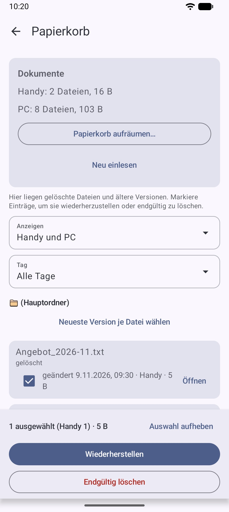
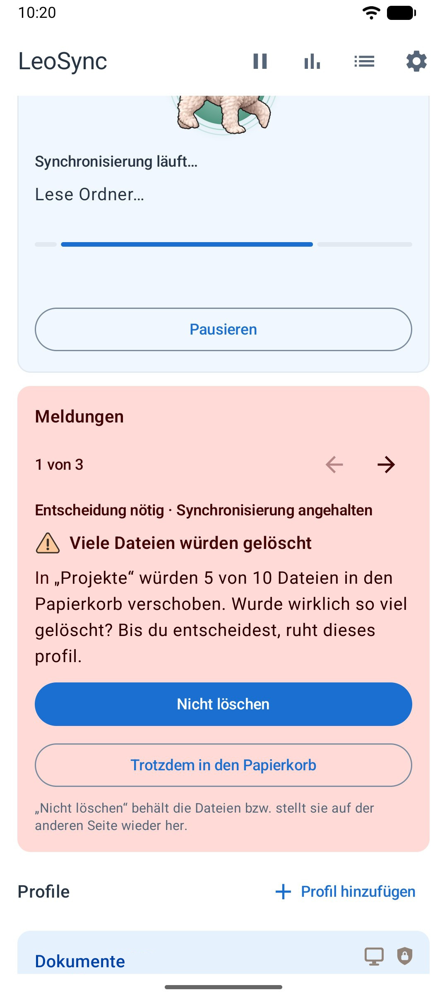
5. Häufige Meldungen
So erscheint eine Meldung beim Verbindung testen (hier: Benutzer oder Passwort stimmt nicht):
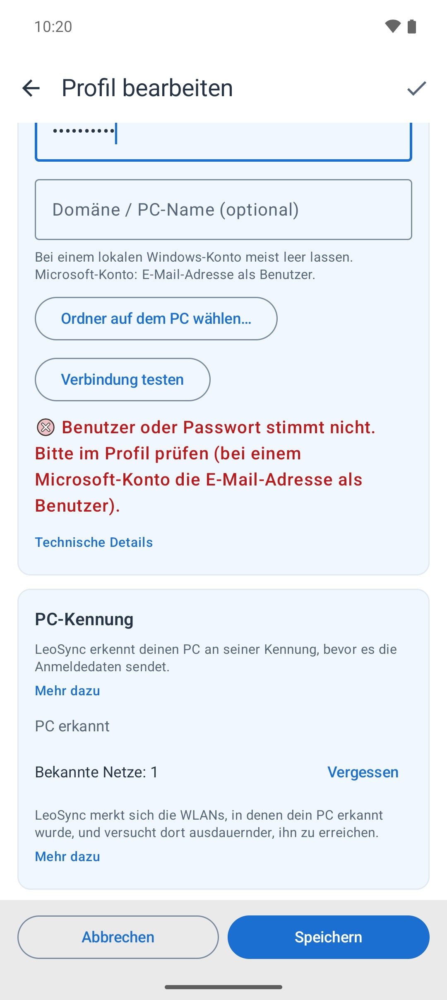
| Meldung | Was tun? |
|---|---|
| Benutzer oder Passwort stimmt nicht | Windows-Benutzer und Passwort prüfen. Bei einem Microsoft-Konto die E-Mail-Adresse als Benutzer verwenden. Oder lege einen eigenen lokalen Benutzer an. |
| Diese Freigabe gibt es auf dem PC nicht | Freigabenamen prüfen oder mit Ordner auf dem PC wählen… auswählen. |
| Kein Zugriff auf diesen Ordner | In den Freigabe-Berechtigungen dem Benutzer Ändern erlauben. |
| Der PC ist nicht erreichbar | PC eingeschaltet (nicht im Ruhezustand)? Handy im selben WLAN? Firewall erlaubt «Datei- und Druckerfreigabe»? |
| PC nicht erreichbar – nichts gelöscht | Erscheint als Meldung unten (ca. 8 Sekunden, schliessbar), wenn LeoSync beim Entfernen nach der Sicherung den PC nicht prüfen konnte. Die Dateien bleiben vorgemerkt und auf dem Handy. Prüfe die Verbindung und versuche es erneut. |
| Der PC ist noch nicht erkannt / PC unbekannt | Es wurden keine Anmeldedaten gesendet. Öffne zu Hause das Profil und tippe auf Verbindung testen. Liefert der PC keine Kennung (z. B. manche NAS), kann LeoSync ihn nicht erkennen und meldet sich dort nicht an. |
| Der PC-Name wurde nicht gefunden | Statt des Namens die IP-Adresse eintragen, z. B. \\192.168.1.20. |
| PC-Ordner nicht gefunden (Schutzbremse) | Wurde der Ordner umbenannt oder verschoben? Zurückbenennen und Erneut prüfen tippen – oder einen neuen Ordner wählen. |
| Verschlüsselung nicht mehr verfügbar / Verschlüsselung abgelehnt | Das Profil war früher verschlüsselt, der PC oder das NAS bietet jetzt keine Verschlüsselung mehr an. Es wird nichts übertragen, bis du entscheidest. Tippe auf Verbindung testen. Hast du die Einstellung am NAS oder PC selbst geändert, kannst du Unverschlüsselt erlauben; sonst lass das Profil angehalten (siehe Abschnitt 4). |
| Anderes Laufwerk erkannt | Hinter der Freigabe liegt ein anderes Laufwerk als bisher (Festplatte oder NAS getauscht, Laufwerk neu formatiert, anderes Gerät unter derselben Adresse). Das Profil ist angehalten, es wurde nichts verändert. Wähle Nicht synchronisieren, oder Ist das richtige Laufwerk – weiter, wenn du den Wechsel selbst veranlasst hast (siehe Abschnitt 4). |
6. Synchronisierung bricht im Hintergrund ab
Viele Hersteller beenden Apps im Hintergrund sehr streng. In LeoSync unter Einstellungen → App-Berechtigungen siehst du, was LeoSync für die automatische Synchronisierung im Hintergrund braucht und was schon erledigt ist: Benachrichtigungen (ab Android 13) und Zugriff auf Fotos und Videos (nur wenn du ein Fotos-Profil hast); fehlt einer dieser Punkte, zeigt die Startseite die Karte «Einrichtung unvollständig». Dazu kommt Akku-Optimierung ausschalten: Das ist eine Empfehlung, kein Muss. Fehlt sie, erscheint auf der Startseite eine neutrale Tipp-Karte; mit Nicht jetzt blendest du sie dauerhaft aus, in den Einstellungen steht dann «Zurückgestellt». Eine Standortberechtigung braucht LeoSync nicht.
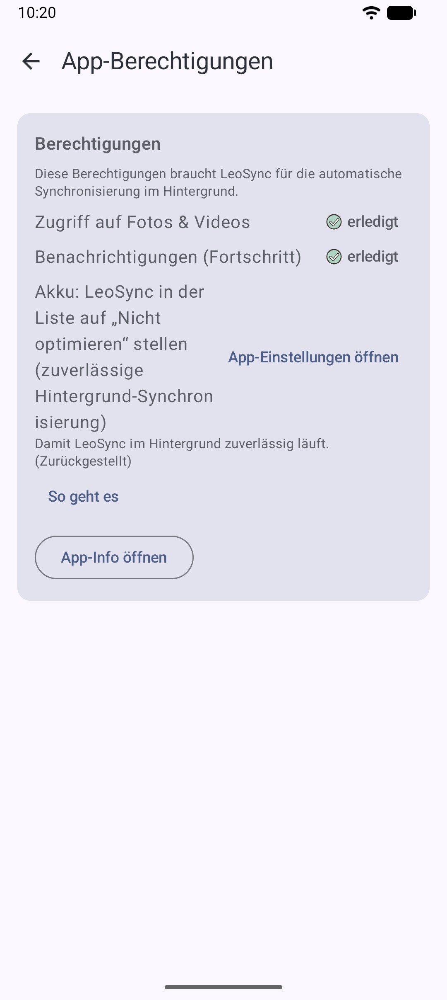
Akku-Optimierung ausschalten: Der Knopf App-Einstellungen öffnen führt zur App-Info von LeoSync; dort findest du die Akku-Einstellung auch auf Handys mit eigener Akkuverwaltung. Die Bezeichnungen unterscheiden sich je nach Hersteller. So geht es: 1. App-Einstellungen öffnen tippen. 2. Akku, Akkunutzung oder Akkuverwaltung der App wählen. 3. Uneingeschränkt wählen (je nach Handy Hintergrundaktivität erlauben oder Nicht optimieren). 4. Zurück zu LeoSync. Manche Handys brauchen zusätzlich Automatischer Start. Bestätigt ist der Weg bei OnePlus; bei anderen Herstellern können die Namen abweichen. Mehr dazu: dontkillmyapp.com.
Läuft eine Synchronisierung ohne Vordergrund? Ohne die Akku-Ausnahme erlaubt Android einer Synchronisierung im Hintergrund manchmal keine Vordergrund-Anzeige. Das steht dann im Verlauf («Lief ohne Vordergrund: Android kann die Synchronisierung unterbrechen; sie wird danach fortgesetzt …»), ist kein Fehler, und die Akku-Tipp-Karte erscheint nach «Nicht jetzt» einmal erneut. Unterbricht Android die Synchronisierung, steht «Pausiert – Wird fortgesetzt», und LeoSync macht von allein weiter. Ruht das Handy lange (Stromsparmodus von Android), setzt LeoSync spätestens beim nächsten Aufwecken fort; mit der Akku-Ausnahme geht es zuverlässiger.
7. Von der alten LeoSync-App umziehen
Die LeoSync-App aus Google Play ist eine neue App (Paketname ch.leo.sync). Die frühere Version von GitHub (com.sync2pc.app) wird nicht mehr weiterentwickelt und aktualisiert sich nicht mehr selbst; Updates kommen künftig nur noch über Google Play. Deine Profile ziehst du mit einer Sicherung um:
- Alte App: Pausiere alle Profile, damit nicht beide Apps dieselben Ordner synchronisieren.
- Alte App: Exportiere unter Einstellungen → Sprache & Sicherung → Sicherung und speichere die Datei. Vergib ein Export-Passwort, sonst enthält die Sicherung keine Passwörter und du gibst sie später neu ein. Mit Export-Passwort enthält die Datei deine Zugangsdaten (verschlüsselt): bewahre sie sicher auf und lösche sie nach dem Umzug.
- Neue App: Tippe auf der Startseite auf Umzug starten und wähle Sicherung importieren.
- Neue App: Folge der Karte Nach dem Import auf der Startseite: Ordner neu wählen, wo es nötig ist, einmal Verbindung testen und den ersten Abgleich starten. Die Profile warten bewusst auf diesen ersten Start.
- Alte App: Deinstalliere sie erst, wenn alles läuft.
Wichtig: Lass nie beide Apps gleichzeitig dieselben Ordner synchronisieren, sonst entstehen zwei Synchronisierungsstände. Profile, die früher am WLAN-Namen hingen, stellt LeoSync beim Import auf die PC-Kennung um.
8. Datenschutz
LeoSync hat keinen Server und sammelt keine Daten. Passwörter werden verschlüsselt auf dem Handy gespeichert (Android-Keystore). Diagnosedaten verlassen das Handy nur, wenn du sie selbst teilst (per E-Mail an leotools@protonmail.com, nur auf deine Aktion). LeoSync liest weder den Standort deines Handys noch den WLAN-Namen. Nur wenn du für ein Fotos-Profil Länderordner wählst, wertet LeoSync den Aufnahmeort (GPS) in deinen Fotos auf dem Handy aus; er wird weder gespeichert noch gesendet. Die Details stehen in der Datenschutzerklärung.
Kontakt
Fragen oder Probleme: leotools@protonmail.com. Fehlerberichte und Vorschläge kannst du auch über GitHub Issues einreichen.